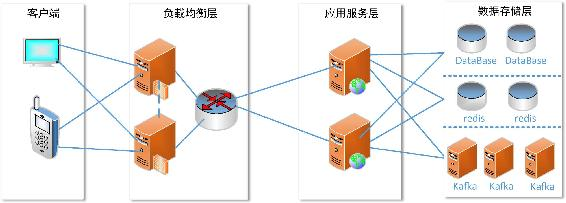
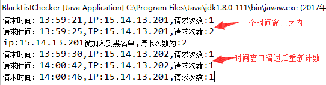

本节将通过一个简单的应用案例完整讲解Kafka Streams的具体用法。同时在本案例中我们将用到Kafka Streams的低级Processor相关的API。
开发一款产品时，防接口被恶意攻击也是进行系统设计时需要考虑的问题之一。特别是对于Web应用，例如，用户通过一个无限循环无限制地向服务端发送请求，就会导致服务端产生大量垃圾数据，同时还会增加服务器的负载。
针对这种恶意请求，本案例我们采用一种常见也较简单的方式：IP地址黑名单过滤。首先从应用接口调用频率考虑，一般情况，1min之内一个用户不可能频繁向后台发送60次请求，至少对同一个接口的访问一般1min之内不会超过60次。当然根据一个页面调用接口数对这个阈值进行适当调整，这里我们只是一种假设。那么当某个用户在1 min之内若访问次数超过我们预设的阈值60次，则认为该用户存在恶意请求的嫌疑，因此我们将该用户IP加入到黑名单之列，如写入到Redis中。在应用层处理时对于用户的每次访问首先查询Redis，判断该用户的IP是否在黑名单之列，若该IP还在黑名单之列，则禁止本次访问，当然这个判断操作可以提前到负载均衡层，在负责均衡代理层就直接拦截掉。同时利用Redis有效期设置功能，我们在将每个用户IP拉入黑名单保存到Redis时设置其有效时间，如在30 min之内不能再次访问，那么我们就可以设置其有效时长为30 min，30 min之后，该用户IP从黑名单自动移除。
当然，这里我们只是简单模拟这种场景，并没有考虑一个局域网共用外网地址的情况，也没有对用户唯一标识进行过多分析判断。
为了实现通过IP黑名单限制访问的功能，假设我们的系统的基础架构如图7-9所示。

图7-9 接口盗刷检测系统的基础架构
如图7-9所示，我们将用户请求日志发送到Kafka，然后通过Kafak Streams实时计算1min之内每个用户请求的次数，若次数超过了我们预设的阈值，则将该IP写入Redis。
对于IP黑名单的计算我们采用Kafka Streams，同时为了简单，我们这里认为一个IP地址即能唯一标识一个用户的一次访问。将用户访问日志写入到Kafka的一个名为“access-log”的主题中，然后一个Kafka Streams应用订阅该主题，对IP实时计算。
由于本例设计的规则为用户1min之内的访问次数是否命中预设阈值，因此在编码实现时采用一个时间窗口大小为1min，滑动步长为也为1min的翻转时间窗口，并利用Kafka Streams提供的低级Processor API自定义一个Processor，将满足条件的IP插入到Redis。由于我们在计算时采用了时间窗口，因此无需管理在状态仓库的计算结果，如果不用时间窗口计算，我们可以在自定义的Processor里将命中规则的IP插入到Redis后，更新该IP在状态仓库中的值为0。
首先订阅Kafka主题创建一个KStream对象，具体实现如代码清单7-11所示。
代码清单7-11 创建IP黑名单过滤计算的KStream对象的实例代码
Properties props = new Properties();
props.put(StreamsConfig.APPLICATION_ID_CONFIG, "ip-blacklist-checker");
props.put(StreamsConfig.BOOTSTRAP_SERVERS_CONFIG, "localhost:9092");
props.put(StreamsConfig.KEY_SERDE_CLASS_CONFIG, Serdes.String().getClass());
props.put(StreamsConfig.VALUE_SERDE_CLASS_CONFIG, Serdes.String().getClass());
props.put(ConsumerConfig.AUTO_OFFSET_RESET_CONFIG, "earliest");
// 设置保存处理器保存当前位置的频率
props.put(StreamsConfig.COMMIT_INTERVAL_MS_CONFIG, "1000");
// 设置轮询Kafka主题获取数据源的等待时间间隔
props.put(StreamsConfig.POLL_MS_CONFIG, "10");
// 实例化KStream对象
KStreamBuilder builder = new KStreamBuilder();
KStream<String, String> accessLog = builder.stream("access-log");在代码清单7-11所示的代码块中，我们同时增加了后面实例化KafkaStreams对象的配置，在本书实例代码中，一般说实例化KStream对象，在这之前都会附带用于实例化KafkaStreams的配置相关代码。在这里为了加快Kafka Streams的作业执行频率，我们设置了Kafka Streams的commit.interval.ms配置项以及poll.ms配置项的值。其中commit.interval.ms用于指定保存当前位置的时间间隔，默认是30s，poll.ms用于设置轮询Kafka主题获取数据源的等待时间间隔，默认值为100，其作用是将该值传递给KafkaConsumer.poll(long timeout)方法。
在介绍计算单位时间访问次数之前，我们先自定义一个Processor，该Processor功能是将命中时间窗口规则的IP写入到Redis。鉴于篇幅原因，我们这里并没有真正写入到Redis，而是简单打印输出，但这并不影响对Kafka Streams计算的讲解。自定义一个Processor只需要实现org.apache.kafka.streams.processor.Processor接口，在process()方法中实现相应的业务处理逻辑，本例只简单打印IP信息。Processor接口有4个方法，其中init()方法可以获取ProcessorContext实例，用来维护当前上下文，通过上下文ProcessorContext得到状态仓库实例以及使用上下文调用周期性的任务；process()方法用于对收到的数据集执行业务处理的方法入口；punctuate()方法用于基于时间推移周期性执行，如在该方法中我们可以执行对状态仓库的操作；close()方法关闭相应资源操作，如关闭状态仓库实例。对于本例，我们只需要在process()方法加入打印日志的逻辑，自定义的IP黑名单处理Processor的具体实现如代码清单7-12所示。
代码清单7-12 自定义用于处理黑名单的Processor的具体实现
public class IpBlackListProcessor implements Processor<Windowed<String>, Long> {
@Override
public void init(ProcessorContext context) {
}
@Override
public void process(Windowed<String> key, Long value) {
System.out.println("ip:"+key.key()+"被加入到黑名单,请求次数为:"+value);
}
@Override
public void punctuate(long timestamp) {
}
@Override
public void close() {
}
}在计算核心逻辑中对按Key进行分组统计时，调用的count(Windows<W> windows, final String storeName)方法，指定时间窗口为1min，即每次统计每个用户在1min之内的请求数。经count()方法处理后得到一个KTable对象，然后将KTable对象转为KStream，从KStream日志流中通过filter过滤提取在时间窗口内请求次数达到预设阈值的记录，交由下游的process()方法处理，在该方法中调用我们自定义的Processor，在自定义Processor中完成黑名单的处理。具体实现如代码清单7-13所示。
代码清单7-13 计算IP黑名单的具体实现代码
accessLog.map(new KeyValueMapper<String, String, KeyValue<String, String>>() {
// 由于在写入数据时并没有设置Key，所以这里对每个数据集设置与Value相同的Key
@Override
public KeyValue<String, String> apply(String key, String value) {
return new KeyValue<String, String>(value, value); // 映射为KeyValue对
}})
.groupByKey() // 按Key分组
.count(TimeWindows.of(60 * 1000L).advanceBy(60*1000), "access-count") // 指定时间窗口
.toStream() // 转为KStream
.filter(new Predicate<Windowed<String>, Long>() {// 提取满足规则的记录
@Override
public boolean test(Windowed<String> key, Long value) {// 指定规则
f(null!=value&&value.longValue()>=2){// 为了测试，我们设置阈值为2
return true;
}
return false;
}
})
.process(new ProcessorSupplier<Windowed<String>, Long>() {// 处理命中规则的记录
@Override
public Processor<Windowed<String>, Long> get() {
return new IpBlackListProcessor(); // 由自定义的Processor执行具体业务处理
}
}, "access-count");为了便于讲解清晰代码清单7-13的代码是基于JDK7实现的，基于JDK8实现的代码如代码清单7-14所示。
代码清单7-14 IP黑名单计算的JDK8写法
accessLog.map((key,value) ->new KeyValue<>(value, value))// 映射为KeyValue对
.groupByKey().count(TimeWindows.of(60 * 1000L).advanceBy(60*1000), "access-count")// 指定时间窗口为1min
.toStream() // 转为KStream
.filter((Windowed<String> key, Long value) -> null!=value && value >=2)
// 提取满足规则记录
.process(()-> new IpBlackListProcessor());// 调用自定义的Processor进行处理最后，实例化一个KafakStreams对象并启动。为了便于测试效果，我们在指定规则代码块里加入一行日志输出，打印日志的代码如下：
System.out.println("请求时间："+DateFormatUtils.format(new
Date(System.currentTimeMillis()), "HH:mm:ss")+",IP:"+key.key()+",请求次数:"+value);通过Kafka shell启动一个生产者模拟用户访问，向Kafka写入IP地址信息，分别在两个时间窗口时间内输入几条IP信息，在Eclipse控制台的输出信息如图7-10所示。

图7-10 模拟黑名单实时计算的输出结果